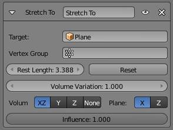
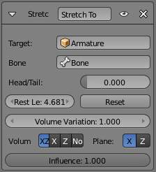

Stretch To Constraint¶
The Stretch To constraint causes its owner to rotate and scale its Y axis towards its target. So it has the same tracking behavior as the Track To constraint. However, it assumes that the Y axis will be the tracking and stretching axis, and doesn’t give you the option of using a different one.
It also optionally has some raw volumetric features, so the owner can squash down as the target moves closer, or thin out as the target moves farther away. Note however, that it is not the real volume of the owner which is thus preserved, but rather the virtual one defined by its scale values. Hence, this feature works even with non-volumetric objects, like empties, 2D meshes or surfaces, and curves.
With bones, the “volumetric” variation scales them along their own local axes (remember that the local Y axis of a bone is aligned with it, from root to tip).
Options¶
- Target (Mesh Object Type)
This constraint uses one target, and is not functional (red state) when it has none.
Stretch To panel for a Mesh Object.
- Vertex Group
- When Target is a mesh, a new field is display where a vertex group can be selected.
- Target (Armature Object Type)
This constraint uses one target, and is not functional (red state) when it has none.
Stretch To panel for a Armature Object.
- Bone
- When Target is an armature, a new field for a bone is displayed.
- Head/Tail
- When using a Bone Target, you can choose where along this bone the target point lies.
- Rest Length
This numeric field sets the rest distance between the owner and its target, i.e. the distance at which there is no deformation (stretching) of the owner.
- Reset
- When clicked, this small button will recalculate the Rest Length value, so that it corresponds to the actual distance between the owner and its target (i.e. the distance before this constraint is applied).
- Volume Variation
- This numeric field controls the amount of “volume” variation proportionally to the stretching amount. Note that the 0.0 value is not allowed, if you want to disable the volume feature, use the None button (see below).
- Volume
- These buttons control which of the X and/or Z axes should be affected (scaled up/down) to preserve the virtual volume while stretching along the Y axis. If you enable the none button, the volumetric features are disabled.
- Plane
- These buttons are equivalent to the Up ones of the Track To constraint: they control which of the X or Z axes should be maintained (as much as possible) aligned with the global Z axis, while tracking the target with the Y axis.
{kind=link}
{kind=link}